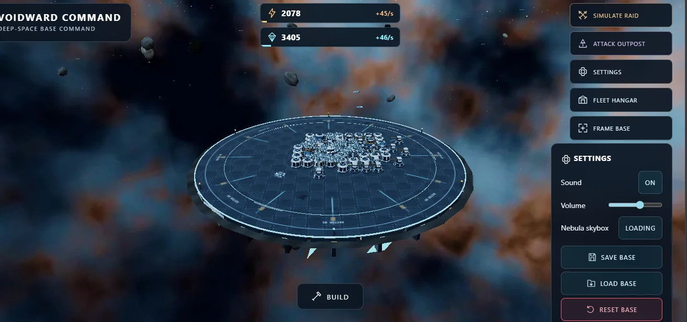

PROJECT / 001 LIVE DEMOVoidward Command
2026 — OngoingBROWSER GAME / INTERACTIVE EXPERIENCE
A playable 3D space strategy prototype with base building, upgrades, fleet management and combat simulations. I guided its development, tested it on desktop and mobile, and deployed it on GitHub Pages.